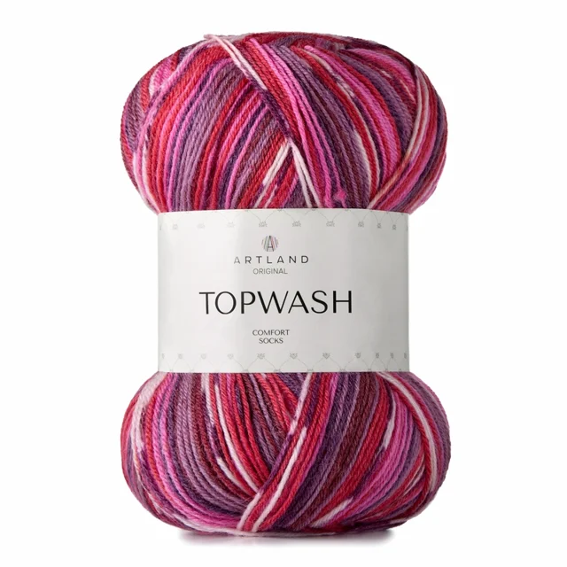
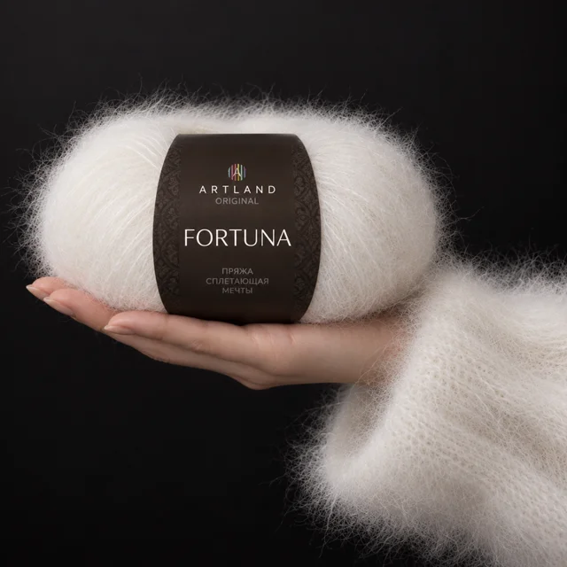
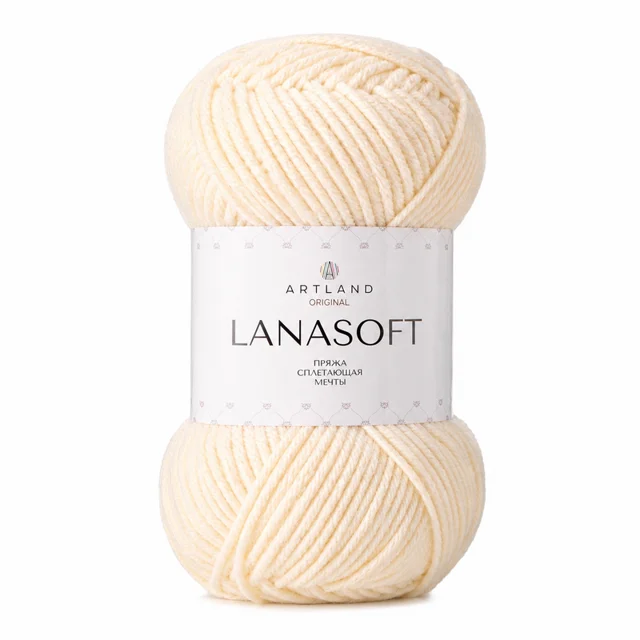

ЦВЕТ ИМЕЕТ
ЗНАЧЕНИЕ.
Иногда всё решает один моток.
Тот самый цвет. Та самая фактура.
Дальше — дело ваших рук.



НАСТРОЕНИЯ100%СВЯЖЕТЕ САМИ
хочется потрогать.НАСТОЯЩИЕ МОТКИ. НАСТОЯЩЕЕ ВДОХНОВЕНИЕ.
ЧТО БУДЕМ
ВЯЗАТЬ?
Уют на каждый день?
Подарок с характером?
Выбирайте нить под свою идею.
ПОЗНАКОМЬТЕСЬ ПОБЛИЖЕ
Это только начало.
В оптовом каталоге — все наши коллекции.
С ХАРАКТЕРОМ ↗
Topwash
65% шерсть / 35% нейлон
Оттенки, цены и наличие — в действующем оптовом каталоге.
А ЧТО, ЕСЛИ
ДОБАВИТЬ ЦВЕТА?
Поиграйте с сочетаниями.
Иногда новая идея начинается
с неожиданной пары.
Нажмите на цвет, чтобы попробовать другой. Соберите сочетание, которое хочется повторить.
Идеи сочетаний. Оттенки пряжи сверяйте по карте конкретной коллекции.
ПО ПЕТЕЛЬКЕ.
ПО ШАЖОЧКУ.
Открыли набор? Мы рядом.
Находите инструкцию и начинайте.
ЭТО КАК РАЗ ДЛЯ ВАС.
вышивкаВИДЕООБЗОРЗнакомство
с Santal
Такой подсказки пока нет. Напишите или позвоните нам — поможем разобраться.
Материалы открываются на действующей странице ARTLAND.
РОССИЯ
СВОЯ ПРЯЖА.
СВОЙ ХАРАКТЕР.
ARTLAND вырос внутри «Пряжа-Урал» — компании, которая работает с пряжей больше 20 лет. Мы решили собрать собственную коллекцию. Своё видение цвета, фактуры и материалов.
Наши коллекции производятся в России и Китае. А дальше начинается самое интересное — то, что создаёте вы.
Давайте знакомитьсяДАВАЙТЕ
СВЯЖЕМСЯ.
Хорошей пряжи нужно больше.
Добавьте ARTLAND в ассортимент
своего магазина или студии.